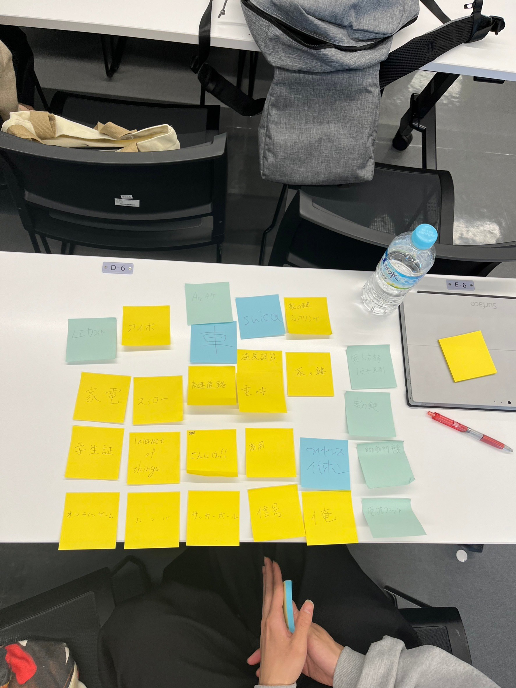

第1回 Iotとは
Iotとは
oT（Internet of Things）とは、インターネットに接続された様々な種類のデバイスや機器が互いに通信し、相互作用すること
自動的に情報を収集、処理、交換することができる技術のこと
スマートホームやスマート都市など、生活の至るところに利用されており、センサー、アクチュエータ、通信機能などの技術が使われている
機器同士が自動的にデータを共有し、効率的に処理することができるため、ビジネスプロセスの改善や生活の利便性の向上など、様々な利点がある
Iotサービスの例

第1回